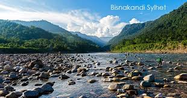
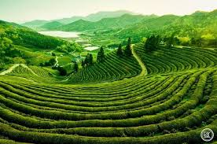

SADAPATHOR
Bholaganj Sadapathor (White Stone) in Companiganj, Sylhet, is a popular tourist spot known for its crystal-clear Dhalai River water, sprawling white stones, and stunning views of the Meghalaya hills. Located near the India-Bangladesh border, it offers activities like boating, swimming, and photography, especially during the monsoon season.
.jfif)
bisnakandi
Bisnakandi (Bichanakandi) is a picturesque tourist destination in Gowainghat, Sylhet, Bangladesh, renowned for its stunning combination of crystal-clear river water,, rocky riverbeds, and towering Khasi mountain ranges. Situated near the Bangladesh-India border, it is often called a "stone garden" or "natural bathtub," best visited during the rainy season for scenic beauty.

sreemangal
Sreemangal, located in the Moulvibazar district of Bangladesh, is renowned as the "Tea Capital of Bangladesh," featuring over 40 tea gardens, including the world's largest. Famous for its lush hills, dense forests like Lawachara National Park, and seven-color tea, it is a premier eco-tourism destination 190 km from Dhaka.
Sylhet Tourist Spot
Sylhet Tourist Spot
+4
